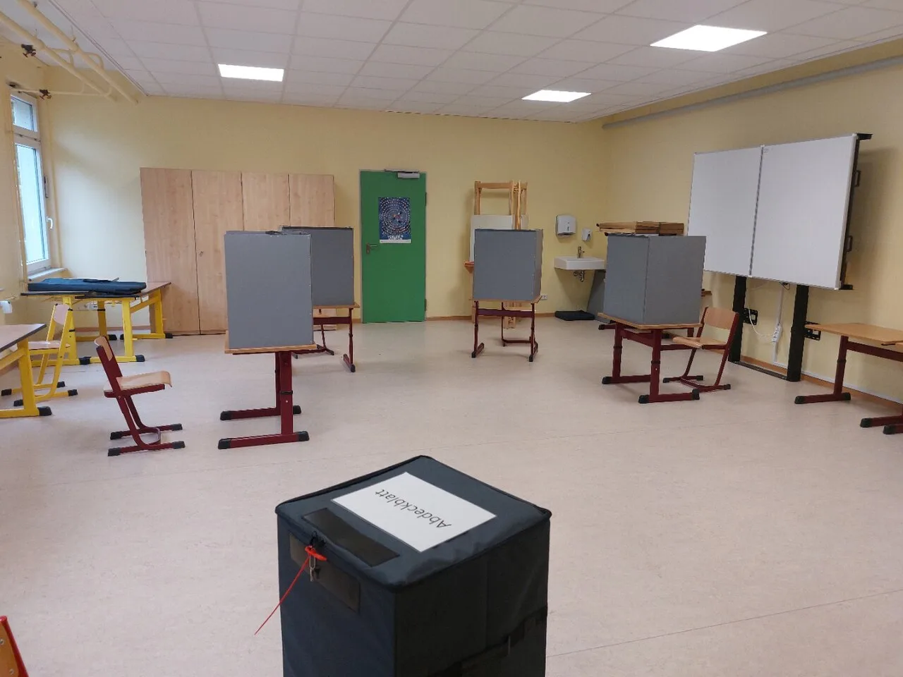

빠른 발표가 신뢰를 만들지는 않습니다

선거가 끝나면 사람들은 결과가 빨리 나오기를 바랍니다. 그러나 정치적 신뢰는 속도에서 생기지 않습니다. 오히려 너무 빠른 발표가 절차 설명 없이 나오면 의심이 커질 수 있습니다. 투표소 신뢰의 핵심은 투표지가 어떻게 발급되고, 투표함이 어떻게 봉인되고, 어디로 이동하고, 누가 참관했는지 기록으로 남는 것입니다.
결과를 믿게 만드는 것은 승패가 아니라 절차입니다. 지지하는 후보가 졌을 때도 납득할 수 있으려면 현장에서 확인 가능한 기록이 있어야 합니다. 투표함 봉인지 번호, 이동 시간, 참관인 서명, 개표 분류 과정, 이의 제기 처리 내역이 공개될수록 소문이 들어갈 자리는 줄어듭니다.
참관은 장식이 아니라 안전장치입니다
참관인은 개표장에 앉아 있는 사람이 아닙니다. 절차가 정해진 대로 진행되는지 확인하고, 의심이 생기는 지점을 공식적으로 남기는 역할을 합니다. 이 역할이 제대로 작동하려면 참관인이 볼 수 있는 범위와 기록할 수 있는 방식이 명확해야 합니다. 멀리서 보기만 하고 질문할 수 없다면 신뢰 장치로 충분하지 않습니다.
다만 참관이 모든 것을 멈추게 해서도 안 됩니다. 선거 관리는 정확성과 진행 속도를 함께 지켜야 합니다. 그래서 필요한 것은 감정적 충돌이 아니라 표준화된 이의 제기 절차입니다. 어느 단계에서 어떤 문제를 제기할 수 있고, 누가 판단하며, 그 결과가 어떻게 남는지 정리돼 있어야 합니다.
디지털 기록은 설명과 함께 있어야 합니다
개표 장비와 전산 시스템은 선거 관리를 빠르게 만들 수 있습니다. 하지만 장비가 들어올수록 설명 책임도 커집니다. 장비가 어떤 작업을 자동화하는지, 사람이 확인하는 단계는 어디인지, 오류가 나면 어떤 수기 절차로 돌아가는지 알려야 합니다. “시스템이 했다”는 말은 신뢰를 만들지 못합니다.
디지털 기록은 공개 가능한 형태로 남아야 합니다. 로그, 시간표, 집계 단계, 수정 내역이 사후 검증 가능한 방식으로 보관돼야 합니다. 개인정보와 투표 비밀은 보호해야 하지만, 절차 기록은 최대한 설명 가능해야 합니다. 민주주의에서 투표 비밀과 절차 투명성은 서로 충돌하는 가치가 아니라 함께 설계해야 할 조건입니다.
소문을 줄이는 방법은 빈칸을 줄이는 일입니다
선거 불신은 정보가 없는 빈칸에서 자랍니다. 투표함이 어디에 있었는지, 왜 개표가 늦어졌는지, 어떤 표가 무효 처리됐는지 설명이 늦으면 추측이 먼저 퍼집니다. 정치적 갈등이 큰 선거일수록 선거관리기관은 결과 발표보다 과정 설명을 더 자주 해야 합니다. 작은 지연도 이유를 알리면 의심이 줄어듭니다.
정치권도 책임이 있습니다. 근거 없는 의혹을 던지는 일은 지지층을 결집할 수 있지만 제도 신뢰를 갉아먹습니다. 반대로 문제 제기를 모두 음모로 몰아도 신뢰가 생기지 않습니다. 필요한 것은 기록을 놓고 확인하는 문화입니다. 투표소 신뢰는 말싸움보다 문서, 사진, 서명, 로그, 참관 기록에서 만들어집니다.
신뢰는 설명보다 기록에서 생깁니다
선거 신뢰는 결과가 마음에 드느냐와 별개입니다. 패배한 쪽도 절차를 납득할 수 있어야 제도가 유지됩니다. 그래서 투표소와 개표소의 핵심은 빠른 발표보다 확인 가능한 기록입니다. 누가 언제 어떤 절차를 거쳤고, 이의 제기가 어떻게 처리되었는지 남아 있어야 나중에 논쟁이 커져도 사실 확인이 가능합니다.
현장 기록은 어렵게 만들 필요가 없습니다. 투표함 봉인 상태, 참관인 확인, 이송 과정, 개표 분류, 재확인 절차가 일정한 양식으로 남으면 됩니다. 중요한 것은 자료가 흩어지지 않고, 일반 시민도 이해할 수 있는 순서로 공개되는 것입니다. 전문 용어로만 설명하면 의혹을 줄이기보다 더 어렵게 만들 수 있습니다.
디지털 장비를 쓰는 경우에는 더 많은 설명이 필요합니다. 장비가 어떤 역할을 하는지, 사람이 다시 확인하는 단계가 어디인지, 오류가 나면 어떻게 멈추고 기록하는지를 분명히 해야 합니다. 기술을 믿으라고 말하는 것보다 기술이 틀렸을 때 잡아내는 절차를 보여주는 편이 신뢰에 더 도움이 됩니다.
정치권도 책임이 있습니다. 의혹 제기는 검증 가능한 질문이어야 합니다. 막연한 불신을 키우는 방식은 지지층을 결집시킬 수 있지만 선거관리 제도 전체를 약하게 만듭니다. 반대로 관리 기관도 설명이 늦거나 자료 공개가 부족하면 작은 의문을 큰 불신으로 키울 수 있습니다.
앞으로 필요한 것은 승자 발표 이후의 투명성입니다. 선거가 끝난 뒤 주요 절차 기록, 오류 처리 사례, 참관인 이의 제기 결과를 정리해 공개하면 다음 선거의 비용을 줄일 수 있습니다. 신뢰는 한 번의 홍보로 생기지 않습니다. 같은 절차가 반복되고, 같은 방식으로 확인될 때 천천히 쌓입니다.
관련 영상
개표과정 중 투표지 확인 절차
좋은 선거 관리는 결과를 빨리 말하는 일이 아니라 결과가 왜 그렇게 나왔는지 설명할 수 있게 남기는 일입니다. 현장 기록이 촘촘할수록 정치적 갈등은 제도 안에서 처리됩니다.
선거 절차에서 가장 강한 방어는 완벽하다는 선언이 아니라 검증 가능한 기록입니다. 투표소의 작은 실수도 기록되고 설명되면 제도 안에서 처리될 수 있습니다. 반대로 기록이 부족하면 사실과 상상이 섞여 불신이 커집니다. 선거관리 기관은 시민이 이해할 수 있는 언어로 절차를 공개해야 하고, 정치권은 의혹을 제기할 때 확인 가능한 근거를 함께 내야 합니다. 투명성은 한쪽 편을 설득하는 기술이 아니라 다음 선거에서도 모두가 같은 규칙을 받아들이게 만드는 기초입니다.
시민이 원하는 것은 모든 절차를 직접 감시하는 일이 아닙니다. 문제가 생겼을 때 되짚어 볼 자료가 있다는 확신입니다. 이 확신이 있으면 결과에 대한 불만도 제도 안에서 다뤄질 가능성이 커집니다. 선거 신뢰는 하루에 만들어지지 않고, 선거가 없는 기간의 준비와 교육에서 자랍니다. 투표소 안내, 참관인 교육, 오류 사례 공개 같은 평범한 작업이 결국 가장 강한 신뢰 장치가 됩니다.
민주주의의 절차는 복잡할수록 더 쉬운 언어로 설명되어야 합니다. 시민이 확인할 수 있는 기록이 많아질수록 선거 결과를 둘러싼 불신은 감정이 아니라 사실 위에서 다뤄질 수 있습니다.
현장 공개가 늘어난다고 해서 모든 불신이 사라지는 것은 아닙니다. 다만 사실을 확인하는 출발점이 생깁니다. 선거관리의 목표는 논쟁을 없애는 것이 아니라 논쟁이 생겼을 때 같은 자료를 놓고 말할 수 있게 하는 것입니다. 그 차이가 작아 보여도 제도 신뢰에는 매우 큽니다.